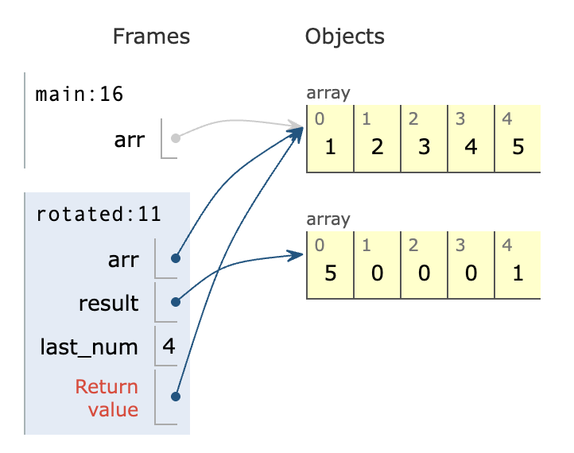

1.0 T1
Q9
What does the following program print?
class Person {
public String status() { return "Okay"; }
}
class Student extends Person {
public String status() { return "Stressed"; }
}
class Academic extends Person {
public String status() { return "Busy"; }
}
class Lecturer extends Academic { }
public class People {
public static void main(String[] args) {
Person[] people = {new Person(), new Student(), new Academic(), new Lecturer()};
for (int i = 0; i < people.length; i++) {
Person person = people[i];
System.out.print(person.status() + " ");
}
}
}
这道题死的很冤枉，是吃了没有检查的亏，再看一遍实际上就是 Okay Stressed Busy Busy, 最后一个类其继承的实际上是 Academic
Q10
Which of the following would be reasonable as an example of a subclass relationship?
There may be multiple correct answers. Select all of them.
Potato is a subclass of Vegetable
Building is a subclass of Skyscraper
House is a subclass of Building
Potato is a subclass of Building
Window is a subclass of House
这道题我选择了以上三个，错点在于没有搞清楚 Class 之间的关系。评论写道：
记住，“X 是 Y 的子类” 意味着 “X 是 Y”
Window 只是 House 其中的一个部分，本身实际上并不是一个类 / 房子
Q11
public class Counter {
private int count;
public int getCount() { return count; }
public void increment() { count += 1; }
public void decrement() { count -= 1; }
public static void main(String[] args) {
Counter.increment();
decrement();
increment();
System.out.println(Counter.getCount());
}
}
Which members of the Counter class need to be made static in order for the code to compile successfully?
There may be multiple correct answers. Select all of them
静态成员 (用 static 修饰的变量或方法): 它们属于类本身，而不是属于类的某个特定的对象 (实例)。无论创建多少个类的对象，静态成员只有一份，被所有对象共享。静态方法可以直接通过类名调用 (ClassName.staticMethod())，也可以通过对象调用 (object.staticMethod())，但通常推荐使用类名调用。
非静态成员 (没有用 static 修饰的变量或方法): 它们属于类的对象 (实例)。每创建一个对象，这个对象就有一份自己的非静态成员变量和非静态方法。你需要先创建类的对象，然后通过对象来调用这些方法 (object.instanceMethod()) 或访问变量 (object.instanceVariable)。
Java 程序的入口点是 public static void main(String[] args)。main 方法必须是 static 的，因为 Java 虚拟机 (JVM) 在启动程序时，不需要创建类的对象就可以直接调用 main 方法来执行程序。
静态方法 (main) 在执行时，没有一个特定的 Counter 对象与之关联（没有 this 指针指向一个对象）。它不知道应该对哪个 Counter 对象的 count 进行操作或获取。
所以需要把所有的 function 以及变量全部都静态化
public class Counter {
private static int count; // 使 count 成为静态变量
public static int getCount() { return count; } // 使方法成为静态的
public static void increment() { count += 1; } // 使方法成为静态的
public static void decrement() { count -= 1; } // 使方法成为静态的
public static void main(String[] args) {
// 现在可以在静态的 main 方法中直接调用静态方法了
Counter.increment();
decrement();
increment();
System.out.println(Counter.getCount());
}
}
可以看到在第 12 行指定直接用 class 构造函数调用后后续默认使用该方法但不规范
count
getCount()
increment()
decrement()
Q12
static void rotate(int[] arr) {
// Your code here
}
static int[] rotated(int[] arr) {
// Your code here
}
Both of these methods should rotate the elements in the given array one space to the left (with the first element wrapping around to the end of the array). However, rotate(x) should rotate the elements in place within x, while rotated(x) should return a rotated version of x without modifying the contents of x itself.
For Example:
You may assume for both methods that the given array is non-empty.
rotate
static void rotate(int[] arr) {
last_num = arr.length - 1;
arr[last_num] = arr[0];
for (int i = 0; i < arr.length - 1, i++){
arr[i] = arr[i + 1];
}
}
最后一位变成第一位，所有其余数值全部往左边移动一位。
该方法目标是直接旋转原始数组，但是逻辑错误如下：
- 第二行没有声明
int类型 - 第三行把第一个数组中的数字放在最后的数组位置上
- 这样做会直接覆盖掉最后一个位置上原本的数值丢失了
- 因此正确思路是在覆盖掉最后一个元素之前就要把原数组的第一个元素临时保存
所以首先改正语法错误然后改正算法
public class Main {
static void rotate(int[] arr) {
// int first = arr[0];
// int last = arr[arr.length - 1];
for (int i = 0; i < arr.length - 1; i++) {
arr[i] = arr[i + 1];
}
}
public static void main(String[] args) {
int[] arr = { 1, 2, 3, 4, 5 };
rotate(arr);
for (int i : arr) {
System.out.println(i);
}
}
}
现在算法还是有小问题，测试发现核心算法思路没问题，输出为
这样以来就好办了，在开始之前记住第一个内容后在排序结束后替换到末尾即可
public class Main {
static void rotate(int[] arr) {
int first = arr[0];
for (int i = 0; i < arr.length - 1; i++) {
arr[i] = arr[i + 1];
}
arr[arr.length - 1] = first;
}
public static void main(String[] args) {
int[] arr = { 1, 2, 3, 4, 5 };
rotate(arr);
for (int i : arr) {
System.out.println(i);
}
}
}
完美解决，23451
rotated
static int[] rotated(int[] arr) {
int[] result = new int[arr.length];
last_num = arr.length - 1;
result[last_num] = arr[0];
for (int i = 1; i < arr.length, i++){
int j = 0;
result[j] = arr[i];
j++;
}
return result;
}
结果就是什么也没变

由于多出来一组数组，可以直接稍微修改下 rotate 函数即可
public class Main {
static int[] rotated(int[] arr) {
int first = arr[0];
int[] result = new int[arr.length];
for (int i = 0; i < arr.length - 1; i++) {
result[i] = arr[i + 1];
}
result[arr.length - 1] = first;
return result;
}
public static void main(String[] args) {
int[] arr = { 1, 2, 3, 4, 5 };
int[] result = rotated(arr);
for (int i : result) {
System.out.println(i);
}
}
}
rotated方法也是静态的，这使得它也可以直接从main方法中调用
Q13
class BoolExpr {
public void describe() {
System.out.print("unknown");
} // To be overridden
public boolean evaluate() {
return false;
} // To be overridden
}
class BoolVal extends BoolExpr {
boolean val;
public BoolVal(boolean val) {
this.val = val; // this 写法是为了调用安全起见
}
@Override
public void describe() {
System.out.print(val);
}
@Override
public boolean evaluate() {
return val;
}
}
Write two new classes
BoolNot must have a constructor that is able to take any single BoolExpr, and represents the negation of that expression: !expr
BoolAnd must have a constructor that is able to take any pair of BoolExprs, and represents the logical and of those expressions: (lhs && rhs)
BoolExpr expr = new BoolAnd(new BoolVal(true), new BoolVal(false));
// 这里使用两个 BoolVal 的参数传参给 BoolAnd
expr = new BoolNot(expr); // 再传给 BoolNot 进行 ! 操作
expr = new BoolAnd(new BoolVal(true), expr); // true 与上一个 expr 进行 && 操作
expr.describe(); // 描述一下现在这个 expr 是啥样的
System.out.println(); // 换行
System.out.println("= " + expr.evaluate()); // 计算最终结果
写完后使用上述程序测试执行的结果应该是：
BoolNot
class BoolNot extends BoolExpr {
BoolExpr expr; // 声明一个变量，用于保存传入的布尔表达式
public BoolNot(BoolExpr expr) {
this.expr = expr; // 在构造函数中将传入的布尔表达式保存
}
@Override
public void describe() {
System.out.print("!");
expr.describe();
}
@Override
public boolean evaluate() {
return !expr.evaluate();
}
}
执行 expr.describe（）; Java 会查看当前存储在 expr 变量中的对象的实际类型 。
- 如果
expr包含一个BoolVal对象（如new BoolVal（true）），则将调用BoolVal类中定义的describe（）方法（打印true或false） - 如果
expr包含一个BoolAnd对象（如new BoolAnd（...）），那么在BoolAnd类中定义的describe（） - 如果
expr包含另一个BoolNot对象（如new BoolNot（...）），则将再次调用BoolNot类中定义的describe（）方法
BoolAnd
class BoolAnd extends BoolExpr {
BoolExpr left;
BoolExpr right;
public BoolAnd(BoolExpr left, BoolExpr right) {
this.left = left;
this.right = right;
}
@Override
public void describe() {
System.out.print("(");
left.describe();
System.out.print(" && ");
right.describe();
System.out.print(")");
}
@Override
public boolean evaluate() {
return left.evaluate() && right.evaluate();
}
}
这题需要对类这一章有很好的理解，需要马上弥补这一块知识点
Q14
Write a class called TempLog that represents a series of regular temperature measurements. The class must have a single constructor that takes the maximum number of measurements that will be logged in this object. The class must have a addTemp method that, given a new measurement, appends it to the log. If there is not capacity to append the measurement, it should be discarded. There should be no way to edit the measurements other than via the addTemp method. The class must have a rangeMax method that, given a pair of indices into the log, returns the maximum temperature recorded between the first and second index, inclusive. You may assume that rangeMax will only be called with indices that specify a non-empty range of measurements. The following is an example of how this class is expected to be used, and how it is expected to behave:
TempLog log = new TempLog(10); // Capacity for 10 measurements
log.addTemp(-4.3);
log.addTemp(10.5);
log.addTemp(18.6);
log.addTemp(27.9);
log.addTemp(22.6);
log.rangeMax(0, 0); // Should return -4.3
log.rangeMax(1, 2); // Should return 18.6
log.rangeMax(1, 4); // Should return 27.9
log.addTemp(35.0);
log.rangeMax(2, 5); // Should return 35.0
题目提及需要一个 constructor 分配 capacity，addTemp 添加进列表
没有容量了直接忽略，实现 rangeMax 功能。初步设想应该是用数组结合类实现。
Variables
double[]
int capacity分配给这个doubel[]double result用于记录最大结果
Function
- 实现 MaxDouble 算法
public class TempLog {
private int len;
private double[] temps;
public TempLog(int capacity) {
len = 0;
temps = new double[capacity];
}
public void addTemp(double temp) {
if (len < temps.length) {
temps[len++] = temp;
}
}
public double rangeMax(int lwr, int upr) {
double result = temps[upr];
for (int i = lwr; i < upr; i++) {
if (temps[i] > result)
result = temps[i];
}
return result;
}
}
以上为标准答案，在重写过程中意识到自己对 Java 的 Array 理解不佳
array.length：用于数组 （[]）。它是一个提供固定容量的属性。
collection.size（）
用于 Collection 类 （如 ArrayList）。这是一个给出当前元素数量的方法。
理解了全部代码之后自己写一遍，用了另外一种方法实现 rangeMax理解了老师方法的不同
public class TempLog {
private double[] tempList;
private int len;
public TempLog(int size) {
tempList = new double[size];
len = 0; // 用于往数组里动态添加元素用
}
public void addTemp(double temp) {
// 由于 Java 没有 Python 那种动态数组
// 所以需要确保 fixed size 的数组有足够的空间添加元素
// 因此 len < tempList.length 可确保
if (len < tempList.length) {
tempList[len++] = temp;
}
}
public double rangeMax(int left, int right) {
/**
* 算法为直接记录 index L or R 的数值为最大值，loop 中对比最终返回 result
*/
double result = tempList[left];
for (int i = left; i < right + 1; i++) {
if (result < tempList[i]) {
result = tempList[i];
}
}
return result;
}
}
标准答案中直接定义了 right index 是最大值，因此在循环中不需要包含最右 index
因此我的方法中要么 right + 1 要么实现 i <= right